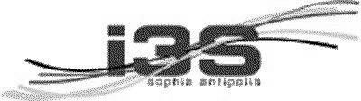
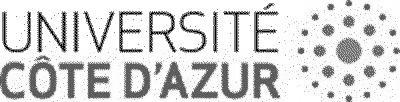

Voici le résultat de l'enquête que nous avons menée auprès des membres du laboratoire en 2021.
Taux de réponse : 63 personnes ont répondu (7 administratifs et 56 scientifiques). Les effectifs du laboratoire sont de l'ordre de 210 (permanent·e·s + doctorant·e·s + ITA)
Les résultats bruts sont ici :
Pour celles et ceux intéressé·e·s, le GDR labo1point5 a mené une enquête plus vaste à la même période (fin 2020) auprès de 30000 personnels du CNRS. 6000 personnes y ont répondu. L'analyse est toujours en cours, mais une première restitution est disponible ici : https://labos1point5.org/les-enquetes/enquete1-resultat
Concernant notre enquête, nous pouvons en tirer les leçons suivantes :
Les membres du laboratoires sont dans leur majorité :
- conscients des enjeux climatiques ...
- ... et considèrent que le laboratoire doit œuvrer
- dans le sens d'une réduction de son empreinte
- en informant les personnels
Concernant les mesures à mettre en oœuvre :
- adhésion forte à la réduction des voyages en avion notamment
- mais réticence à l'idée d'une solution imposée d'en haut
- Rappel règles pour les fonctionnaires d'état : avion n'est pas autorisé si alternative en train de moins de 4h ou 6h pour A/R dans la journée
Concernant les orientations de la recherche :
- l'idée de prendre en compte les enjeux environnementaux dans des appels à projets interne
- mais à nouveau sans un cadre trop rigide
- il y a une volonté de prendre en compte le climat dans nos orientations de recherche lorsque cela semble applicable
- Il y a un besoin d'informer sur l'impact du numérique, qui est au cœur de notre métier ou de notre recherche.